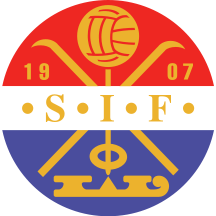
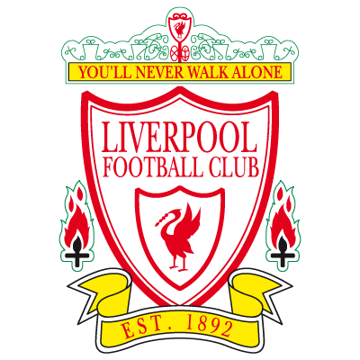

| LFC in European Competition | ||||
|---|---|---|---|---|
| 1964-2014 | ||||
| Miles Traveled: | 471,678 | See the routes here | ||
| Games Played: | 340 | 192W 74D 74L | ||
| Goals Scored: | 602 | |||
| Goals Conceded: | 278 | |||
| Appearances: | 150 | Jamie Carragher | ||
| 124 | Steven Gerrard | |||
| 94 | Sami Hyypi | |||
| 89 | Ian Callaghan | |||
| Top Goalscorers: | 40 | Steven Gerrard | ||
| 22 | Michael Owen | |||
| 20 | Ian Rush | |||
| 17 | Roger Hunt | |||
| Goals per Game: | .55 | Roger Hunt | ||
| .53 | Ian Rush | |||
| .44 | Terry McDermott | |||
| .4 | Michael Owen | |||
| Clean Sheets: | 39 | Ray Clemence | ||
| 38 | Pepe Reina | |||
| 18 | Bruce Grobbelaar | |||
| 17 | Jerzy Dudek | |||
| 1964-65 European Cup | ||||
|---|---|---|---|---|
| Preliminary Round | ||||
| 17.08.1964 | ||||
| KR Reykjavik | 0:5 | Liverpool | ||
| 14.09.1964 | ||||
| Liverpool | 6:1 | KR Reykjavik | ||
| First Round | ||||
| 25.11.1964 | ||||
| Liverpool | 3:0 | Anderlecht | ||
| 14.09.1964 | ||||
| Anderlecht | 0:1 | Liverpool | ||
| Second Round | ||||
| 10.02.1965 | ||||
 |
FC Köln | 0:0 | Liverpool | |
| 17.03.1965 | ||||
| Liverpool | 0:0 | FC Kln | |
24.03.1965 |
|
FC Kln | 2:2 | Liverpool | |
| Liverpool Advance on Coin Toss | ||||
| Semifinal | ||||
| 04.05.1965 | ||||
| Liverpool | 3:1 | Internazionale | ||
| 12.05.1965 | ||||
| Internazionale | 3:0 | Liverpool | ||
| 1965-66 UEFA Cup Winners' Cup | ||||
|---|---|---|---|---|
| First Round | ||||
| 29.09.1965 | ||||
| Juventus | 1:0 | Liverpool | ||
| 13.10.1965 | ||||
| Liverpool | 2:0 | Juventus | ||
| Second Round | ||||
| 01.12.1965 | ||||
| Liverpool | 3:1 | Standard Liege | ||
| 15.12.1965 | ||||
| Standard Liege | 1:2 | Liverpool | ||
| Third Round | ||||
| 01.03.1966 | ||||
| Honvéd | 0:0 | Liverpool | ||
| 08.03.1966 | ||||
| Liverpool | 2:0 | Honvéd | ||
| Semifinal | ||||
| 14.04.1966 | ||||
| Celtic | 1:0 | Liverpool | ||
| 19.04.1966 | ||||
| Liverpool | 2:0 | Celtic | ||
| Final | ||||
| 05.05.1966 | ||||
| Borussia Dortmund | 2:1 | Liverpool | ||
| Video: First Half · Second Half · Extra Time | ||||
| 1966-67 European Cup | ||||
|---|---|---|---|---|
| First Round | ||||
| 28.09.1966 | ||||
| Liverpool | 2:0 | Petrolul Ploieti | ||
| 12.10.1966 | ||||
| Petrolul Ploieti | 3:1 | Liverpool | ||
| 19.10.1966 | ||||
| Liverpool | 2:0 | Petrolul Ploiești | ||
| Second Round | ||||
| 07.12.1966 | ||||
| Ajax | 5:1 | Liverpool | ||
| 19.10.1966 | ||||
| Liverpool | 2:2 | Ajax | ||
| 1967-68 Inter-Cities Fairs Cup | ||||
|---|---|---|---|---|
| First Round | ||||
| 19.09.1967 | ||||
| Malmö FF | 0:2 | Liverpool | ||
| 04.10.1967 | ||||
| Liverpool | 2:1 | Malmö FF | ||
| Second Round | ||||
| 07.11.1967 | ||||
| Liverpool | 8:0 | TSV 1860 München | ||
| 14.11.1967 | ||||
| TSV 1860 München | 1:2 | Liverpool | ||
| Third Round | ||||
| 28.11.1967 | ||||
| Ferencváros | 1:0 | Liverpool | ||
| 09.01.1968 | ||||
| Liverpool | 0:1 | Ferencváros | ||
| 1968-69 Inter-Cities Fairs Cup | ||||
|---|---|---|---|---|
| First Round | ||||
| 18.09.1968 | ||||
| Athletic Bilbao | 2:1 | Liverpool | ||
| 04.10.1968 | ||||
| Liverpool | 2:1 | Athletic Bilbao | ||
| Athletic Bilbao Advance on Coin Toss | ||||
| 1969-70 Inter-Cities Fairs Cup | ||||
|---|---|---|---|---|
| First Round | ||||
| 16.09.1969 | ||||
| Liverpool | 10:0 | Dundalk |  |
|
| 30.09.1969 | ||||
|
Dundalk | 0:4 | Liverpool | |
| Second Round | ||||
| 12.11.1969 | ||||
| Vitória Setubal | 1:0 | Liverpool | ||
| 26.11.1969 | ||||
| Liverpool | 3:2 | Vitória Setubal | ||
| 1970-71 Inter-Cities Fairs Cup | ||||
|---|---|---|---|---|
| First Round | ||||
| 15.09.1970 | ||||
| Liverpool | 1:0 | Ferencváros | ||
| 29.09.1970 | ||||
| Ferencváros | 1:1 | Liverpool | ||
| Second Round | ||||
| 21.10.1970 | ||||
| Liverpool | 3:0 | Dinamo Bucureşti | ||
| 04.11.1970 | ||||
| Dinamo Bucureşti | 1:1 | Liverpool | ||
| Third Round | ||||
| 09.12.1970 | ||||
| Hibernian | 0:1 | Liverpool | ||
| 22.12.1970 | ||||
| Liverpool | 2:0 | Hibernian | ||
| Fourth Round | ||||
| 10.03.1971 | ||||
| Liverpool | 3:0 | FC Bayern München | ||
| 24.03.1971 | ||||
| FC Bayern München | 1:1 | Liverpool | ||
| Semifinal | ||||
| 14.04.1971 | ||||
| Liverpool | 0:1 | Leeds United | ||
| 28.04.1971 | ||||
| Leeds United | 0:0 | Liverpool | ||
| 1971-72 UEFA Cup Winners' Cup | ||||
|---|---|---|---|---|
| First Round | ||||
| 15.09.1971 | ||||
| Servette FC | 2:1 | Liverpool | ||
| 29.09.1971 | ||||
| Liverpool | 2:0 | Servette FC | ||
| Second Round | ||||
| 20.10.1971 | ||||
| Liverpool | 0:0 | FC Bayern München | ||
| 03.11.1971 | ||||
| FC Bayern München | 3:1 | Liverpool | ||
| 1972-73 UEFA Cup | ||||
|---|---|---|---|---|
| First Round | ||||
| 12.09.1972 | ||||
| Liverpool | 2:0 | Eintracht Frankfurt | ||
| 26.09.1972 | ||||
| Eintracht Frankfurt | 0:0 | Liverpool | ||
| Second Round | ||||
| 24.10.1972 | ||||
| Liverpool | 3:0 | AEK Athens | ||
| 07.11.1972 | ||||
| AEK Athens | 1:3 | Liverpool | ||
| Third Round | ||||
| 29.11.1972 | ||||
| Dynamo Berlin | 0:0 | Liverpool | ||
| 13.12.1972 | ||||
| Liverpool | 3:1 | Dynamo Berlin | ||
| Fourth Round | ||||
| 07.03.1973 | ||||
| Liverpool | 2:0 | Dynamo Dresden | ||
| 21.03.1973 | ||||
| Dynamo Dresden | 0:1 | Liverpool | ||
| Semifinal | ||||
| 10.04.1973 | ||||
| Liverpool | 1:0 | Tottenham | ||
| 25.04.1973 | ||||
| Tottenham | 2:1 | Liverpool | ||
| Final | ||||
| 10.05.1973 | ||||
| Liverpool | 3:0 | 'Gladbach | ||
| 23.05.1973 | ||||
| 'Gladbach | 2:0 | Liverpool | ||
| 1973-74 European Cup | ||||
|---|---|---|---|---|
| First Round | ||||
| 19.09.1973 | ||||
 |
Jeunesse d'Esch | 1:1 | Liverpool | |
| 03.10.1973 | ||||
| Liverpool | 2:0 | Jeunesse d'Esch | |
|
| Second Round | ||||
| 24.10.1973 | ||||
 |
Red Star Belgrade | 2:1 | Liverpool | |
| 06.11.1973 | ||||
| Liverpool | 1:2 | Red Star Belgrade | |
|
| 1974-75 UEFA Cup Winners' Cup | ||||
|---|---|---|---|---|
| First Round | ||||
| 17.09.1974 | ||||
| Liverpool | 11:0 | Strømsgodset IF |  | |
| 01.10.1974 | ||||
| Strømsgodset IF | 0:1 | Liverpool | ||
| Second Round | ||||
| 23.10.1974 | ||||
| Liverpool | 1:1 | Ferencváros | ||
| 05.11.1974 | ||||
| Ferencváros | 0:0 | Liverpool | ||
| 1975-76 UEFA Cup | ||||
|---|---|---|---|---|
| First Round | ||||
| 17.09.1975 | ||||
| Hibernian | 1:0 | Liverpool | ||
| 30.09.1975 | ||||
| Liverpool | 3:1 | Hibernian | ||
| Second Round | ||||
| 22.10.1975 | ||||
| Real Sociedad | 1:3 | Liverpool | ||
| 04.11.1975 | ||||
| Liverpool | 6:0 | Real Sociedad | ||
| Third Round | ||||
| 26.11.1975 | ||||
| Śląsk Wrocław | 1:2 | Liverpool | ||
| 10.12.1975 | ||||
| Liverpool | 3:0 | Śląsk Wrocław | ||
| Fourth Round | ||||
| 03.03.1976 | ||||
| Dynamo Dresden | 0:0 | Liverpool | ||
| 17.03.1976 | ||||
| Liverpool | 2:1 | Dynamo Dresden | ||
| Semifinal | ||||
| 30.03.1976 | ||||
| Barcelona | 0:1 | Liverpool | ||
| 14.04.1976 | ||||
| Liverpool | 1:1 | Barcelona | ||
| Final | ||||
| 28.04.1976 | ||||
| Liverpool | 3:2 | Club Brugge | ||
| 19.05.1976 | ||||
| Club Brugge | 1:1 | Liverpool | ||
| 1976-77 European Cup | ||||
|---|---|---|---|---|
| First Round | ||||
| 14.09.1976 | ||||
| Liverpool | 2:0 | Crusaders | ||
| 28.09.1976 | ||||
| Crusaders | 0:5 | Liverpool | ||
| Second Round | ||||
| 20.10.1976 | ||||
| Trabzonspor | 1:0 | Liverpool | ||
| 03.11.1976 | ||||
| Liverpool | 3:0 | Trabzonspor | ||
| Third Round | ||||
| 02.03.1977 | ||||
| Saint-Étienne | 1:0 | Liverpool | ||
| 16.03.1977 | ||||
| Liverpool | 3:1 | Saint-Étienne | ||
| Video: ESPN Classic Recap | ||||
| Semifinal | ||||
| 06.04.1977 | ||||
| FC Zürich | 1:3 | Liverpool | ||
| 20.04.1977 | ||||
| Liverpool | 3:0 | FC Zürich | ||
| Final | ||||
| 25.05.1977 | ||||
| Gladbach | 1:3 | Liverpool | ||
| Video: Full Match | ||||
| 1977-78 European Cup | ||||
|---|---|---|---|---|
| Second Round | ||||
| 19.10.1977 | ||||
| Liverpool | 5:1 | Dynamo Dresden | ||
| 02.11.1977 | ||||
| Dynamo Dresden | 2:1 | Liverpool | ||
| Third Round | ||||
| 01.03.1978 | ||||
| Benfica | 1:2 | Liverpool | ||
| 15.03.1978 | ||||
| Liverpool | 4:1 | Benfica | ||
| Semifinal | ||||
| 29.03.1978 | ||||
| Gladbach | 2:1 | Liverpool | ||
| 12.04.1978 | ||||
| Liverpool | 3:0 | Gladbach | ||
| Final | ||||
| 10.05.1978 | ||||
| Club Brugge | 0:1 | Liverpool | ||
| Video: Full Match | ||||
| European Super Cup | ||||
| First Leg | ||||
| 11.22.1977 | ||||
| Hamburger SV | 1:1 | Liverpool | ||
| Second Leg | ||||
| 06.12.1977 | ||||
| Liverpool | 6:0 | Hamburger SV | ||
| 1978-79 European Cup | ||||
|---|---|---|---|---|
| First Round | ||||
| 13.09.1978 | ||||
| Nottingham Forest | 2:0 | Liverpool | ||
| 27.09.1978 | ||||
| Liverpool | 0:0 | Nottingham Forest | ||
| European Super Cup | ||||
| First Leg | ||||
| 04.12.1978 | ||||
| Anderlecht | 3:1 | Liverpool | ||
| Second Leg | ||||
| 19.12.1978 | ||||
| Liverpool | 2:1 | Anderlecht | ||
| 1979-80 European Cup | ||||
|---|---|---|---|---|
| First Round | ||||
| 19.09.1979 | ||||
| Liverpool | 2:1 | Dinamo Tbilisi | ||
| 03.10.1979 | ||||
| Dinamo Tbilisi | 3:0 | Liverpool | ||
| Video: Full Match | ||||
| 1980-81 European Cup | ||||
|---|---|---|---|---|
| First Round | ||||
| 17.09.1980 | ||||
| Oulun Palloseura | 1:1 | Liverpool | ||
| 01.10.1980 | ||||
| Liverpool | 10:1 | Oulun Palloseura | ||
| Second Round | ||||
| 22.10.1980 | ||||
| Aberdeen | 0:1 | Liverpool | ||
| 05.11.1980 | ||||
| Liverpool | 4:0 | Aberdeen | ||
| Third Round | ||||
| 04.03.1981 | ||||
| Liverpool | 5:1 | CSKA Sofia | ||
| 18.03.1981 | ||||
| CSKA Sofia | 0:1 | Liverpool | ||
| Semifinal | ||||
| 08.04.1981 | ||||
| Liverpool | 0:0 | FC Bayern München | ||
| 22.04.1981 | ||||
| FC Bayern München | 1:1 | Liverpool | ||
| Final | ||||
| 27.05.1981 | ||||
| Real Madrid | 0:1 | Liverpool | ||
| 1981-82 European Cup | ||||
|---|---|---|---|---|
| First Round | ||||
| 16.09.1981 | ||||
| Oulun Palloseura | 0:1 | Liverpool | ||
| 30.09.1981 | ||||
| Liverpool | 7:0 | Oulun Palloseura | ||
| Second Round | ||||
| 21.10.1981 | ||||
| AZ Alkmaar | 2:2 | Liverpool | ||
| 04.11.1981 | ||||
| Liverpool | 3:2 | AZ Alkmaar | ||
| Video: Match Highlights | ||||
| Third Round | ||||
| 03.03.1982 | ||||
| Liverpool | 1:0 | CSKA Sofia | ||
| 17.03.1982 | ||||
| CSKA Sofia | 2:0 | Liverpool | ||
| 1982-83 European Cup | ||||
|---|---|---|---|---|
| First Round | ||||
| 14.09.1982 | ||||
|
Dundalk | 1:4 | Liverpool | |
| 28.09.1982 | ||||
| Liverpool | 1:0 | Dundalk | |
|
| Second Round | ||||
| 19.10.1982 | ||||
| Helsinki JK | 1:0 | Liverpool | ||
| 02.11.1982 | ||||
| Liverpool | 5:0 | Helsinki JK | ||
| Third Round | ||||
| 19.10.1982 | ||||
| Widzew Łódź | 2:0 | Liverpool | ||
| 02.11.1982 | ||||
| Liverpool | 3:2 | Widzew Łódź | ||
| 1983-84 European Cup | ||||
|---|---|---|---|---|
| First Round | ||||
| 14.09.1983 | ||||
| Odense BK | 0:1 | Liverpool | ||
| 28.09.1983 | ||||
| Liverpool | 5:0 | Odense BK | ||
| Second Round | ||||
| 19.10.1983 | ||||
| Liverpool | 0:0 | Athletic Bilbao | ||
| 02.11.1983 | ||||
| Athletic Bilbao | 0:1 | Liverpool | ||
| Third Round | ||||
| 07.03.1984 | ||||
| Liverpool | 1:0 | Benfica | ||
| 21.03.1984 | ||||
| Benfica | 1:4 | Liverpool | ||
| Semifinal | ||||
| 11.04.1984 | ||||
| Liverpool | 1:0 | Dinamo Bucureşti | ||
| 25.04.1984 | ||||
| Dinamo Bucureşti | 1:2 | Liverpool | ||
| Final | ||||
| 30.05.1984 | ||||
| Liverpool | 1:1 (4:2) | AS Roma | ||
| Video: Full Match | ||||
| 1984-85 European Cup | ||||
|---|---|---|---|---|
| First Round | ||||
| 19.09.1984 | ||||
| Lech Poznan | 0:1 | Liverpool | ||
| 03.10.1984 | ||||
| Liverpool | 4:0 | Lech Poznan | ||
| Second Round | ||||
| 24.10.1984 | ||||
| Liverpool | 3:1 | Benfica | ||
| 07.11.1984 | ||||
| Benfica | 1:0 | Liverpool | ||
| Third Round | ||||
| 06.03.1985 | ||||
| FK Austria Wien | 1:1 | Liverpool | ||
| 02.11.1983 | ||||
| Liverpool | 4:1 | FK Austria Wien | ||
| Semifinal | ||||
| 11.04.1984 | ||||
| Liverpool | 4:0 | Panathinaikos | ||
| 25.04.1984 | ||||
| Panathinaikos | 0:1 | Liverpool | ||
| Final | ||||
| 29.05.1985 | ||||
| Liverpool | 0:1 | Juventus | ||
| Video: Full Match | ||||
| European Super Cup | ||||
| 16.01.1985 | ||||
| Juventus | 2:0 | Liverpool | ||
| 1991-92 UEFA Cup | ||||
|---|---|---|---|---|
| First Round | ||||
| 18.09.1991 | ||||
| Liverpool | 6:1 | FC Kuusysi | ||
| 02.10.1991 | ||||
| FC Kuusysi | 1:0 | Liverpool | ||
| Second Round | ||||
| 23.10.1991 | ||||
| AJ Auxerre | 2:0 | Liverpool | ||
| 06.11.1991 | ||||
| Liverpool | 3:0 | AJ Auxerre | ||
| Third Round | ||||
| 27.11.1991 | ||||
| Swarovski Tirol | 0:2 | Liverpool | ||
| 11.12.1991 | ||||
| Liverpool | 4:0 | Swarovski Tirol | ||
| Fourth Round | ||||
| 04.03.1992 | ||||
| Genoa | 2:0 | Liverpool | ||
| 18.03.1992 | ||||
| Liverpool | 1:2 | Genoa | ||
| 1992-93 UEFA Cup Winners' Cup | ||||
|---|---|---|---|---|
| First Round | ||||
| 16.09.1992 | ||||
| Liverpool | 6:1 | Apollon Limassol |  |
|
| 29.09.1992 | ||||
|
Apollon Limassol | 1:2 | Liverpool | |
| Second Round | ||||
| 22.10.1992 | ||||
| Spartak Moscow | 4:2 | Liverpool | ||
| 04.11.1992 | ||||
| Liverpool | 0:2 | Spartak Moscow | ||
| 1995-96 UEFA Cup | ||||
|---|---|---|---|---|
| First Round | ||||
| 12.09.1995 | ||||
| Spartak Vladikavkaz | 1:2 | Liverpool |  | |
| 26.09.1995 | ||||
| Liverpool | 0:0 | Spartak Vladikavkaz | ||
| Second Round | ||||
| 17.10.1995 | ||||
| Brøndby | 0:0 | Liverpool | ||
| 31.10.1995 | ||||
| Liverpool | 0:1 | Brøndby | ||
| 1996-97 UEFA Cup Winners' Cup | ||||
|---|---|---|---|---|
| First Round | ||||
| 12.09.1996 | ||||
| MyPa | 0:1 | Liverpool | ||
| 26.09.1996 | ||||
| Liverpool | 3:1 | MyPa | ||
| Second Round | ||||
| 17.10.1996 | ||||
| FC Sion | 1:2 | Liverpool | ||
| 31.10.1996 | ||||
| Liverpool | 6:3 | FC Sion | ||
| Third Round | ||||
| 06.03.1997 | ||||
| SK Brann | 1:1 | Liverpool | ||
| Video: God | ||||
| 20.03.1997 | ||||
| Liverpool | 3:0 | SK Brann | ||
| Semifinal | ||||
| 10.04.1997 | ||||
| Paris St Germain | 3:0 | Liverpool | ||
| 24.04.1997 | ||||
| Liverpool | 2:0 | Paris St Germain | ||
| 1997-98 UEFA Cup | ||||
|---|---|---|---|---|
| First Round | ||||
| 16.09.1997 | ||||
| Celtic | 2:2 | Liverpool | ||
| 30.09.1997 | ||||
| Liverpool | 0:0 | Celtic | ||
| Second Round | ||||
| 21.10.1997 | ||||
| RC Strasbourg | 3:0 | Liverpool | ||
| 04.11.1997 | ||||
| Liverpool | 2:0 | RC Strasbourg | ||
| 1998-99 UEFA Cup | ||||
|---|---|---|---|---|
| First Round | ||||
| 15.09.1998 | ||||
| MFK Košice | 0:3 | Liverpool | ||
| 29.09.1998 | ||||
| Liverpool | 5:0 | MFK Košice | ||
| Second Round | ||||
| 20.10.1998 | ||||
| Liverpool | 0:0 | Valencia | ||
| 03.11.1998 | ||||
| Valencia | 2:2 | Liverpool | ||
| Third Round | ||||
| 15.09.1998 | ||||
| Celta Vigo | 3:1 | Liverpool | ||
| 29.09.1998 | ||||
| Liverpool | 0:1 | Celta Vigo | ||
| 2000-01 UEFA Cup | ||||
|---|---|---|---|---|
| First Round | ||||
| 14.09.2000 | ||||
| Rapid Bucureşti | 0:1 | Liverpool | ||
| 28.09.2000 | ||||
| Liverpool | 0:0 | Rapid Bucureşti | ||
| Second Round | ||||
| 26.10.2000 | ||||
| Liverpool | 1:0 | Slovan Liberec | ||
| 09.11.2000 | ||||
| Slovan Liberec | 2:3 | Liverpool | ||
| Third Round | ||||
| 23.11.2000 | ||||
| Olympiacos | 2:2 | Liverpool | ||
| 07.12.2000 | ||||
| Liverpool | 2:0 | Olympiacos | ||
| Fourth Round | ||||
| 15.02.2001 | ||||
| AS Roma | 0:2 | Liverpool | ||
| 22.02.2001 | ||||
| Liverpool | 1:0 | AS Roma | ||
| Quarterfinal | ||||
| 08.03.2001 | ||||
 |
Porto | 0:0 | Liverpool | |
| 15.03.2001 | ||||
| Liverpool | 2:0 | Porto | |
|
| Semifinal | ||||
| 05.04.2001 | ||||
| Barcelona | 0:0 | Liverpool | ||
| 19.04.2001 | ||||
| Liverpool | 1:0 | Barcelona | ||
| Final | ||||
| 16.05.2001 | ||||
| Liverpool | 5:4 (aet) | Alavés | ||
| 2001-02 Champions League | ||||||||||||||||||||||||||||||||||||||||||||
|---|---|---|---|---|---|---|---|---|---|---|---|---|---|---|---|---|---|---|---|---|---|---|---|---|---|---|---|---|---|---|---|---|---|---|---|---|---|---|---|---|---|---|---|---|
| 3rd Qualifying Round | ||||||||||||||||||||||||||||||||||||||||||||
| 08.08.2001 | ||||||||||||||||||||||||||||||||||||||||||||
| FC Haka | 0:5 | Liverpool | ||||||||||||||||||||||||||||||||||||||||||
| 21.08.2001 | ||||||||||||||||||||||||||||||||||||||||||||
| Liverpool | 4:1 | FC Haka | ||||||||||||||||||||||||||||||||||||||||||
| First Group Stage | ||||||||||||||||||||||||||||||||||||||||||||
| ||||||||||||||||||||||||||||||||||||||||||||
| Second Group Stage | ||||||||||||||||||||||||||||||||||||||||||||
| ||||||||||||||||||||||||||||||||||||||||||||
| Quarterfinal | ||||||||||||||||||||||||||||||||||||||||||||
| 03.04.2002 | ||||||||||||||||||||||||||||||||||||||||||||
| Liverpool | 1:0 | Leverkusen | ||||||||||||||||||||||||||||||||||||||||||
| 09.04.2002 | ||||||||||||||||||||||||||||||||||||||||||||
| Leverkusen | 4:2 | Liverpool | ||||||||||||||||||||||||||||||||||||||||||
| European Super Cup | ||||||||||||||||||||||||||||||||||||||||||||
| 24.08.2001 | ||||||||||||||||||||||||||||||||||||||||||||
| FC Bayern München | 2:3 | Liverpool | ||||||||||||||||||||||||||||||||||||||||||
| 2002-03 Champions League | ||||||||||||||||||||||||||||||||||||||||||||
|---|---|---|---|---|---|---|---|---|---|---|---|---|---|---|---|---|---|---|---|---|---|---|---|---|---|---|---|---|---|---|---|---|---|---|---|---|---|---|---|---|---|---|---|---|
| Group Stage | ||||||||||||||||||||||||||||||||||||||||||||
| ||||||||||||||||||||||||||||||||||||||||||||
| 2002-03 UEFA Cup | ||||||||||||||||||||||||||||||||||||||||||||
| Third Round | ||||||||||||||||||||||||||||||||||||||||||||
| 28.11.2002 | ||||||||||||||||||||||||||||||||||||||||||||
| Vitesse Arnhem | 0:1 | Liverpool | ||||||||||||||||||||||||||||||||||||||||||
| 12.12.2002 | ||||||||||||||||||||||||||||||||||||||||||||
| Liverpool | 1:0 | Vitesse Arnhem | ||||||||||||||||||||||||||||||||||||||||||
| Fourth Round | ||||||||||||||||||||||||||||||||||||||||||||
| 20.02.2003 | ||||||||||||||||||||||||||||||||||||||||||||
| AJ Auxerre | 0:1 | Liverpool | ||||||||||||||||||||||||||||||||||||||||||
| 27.02.2003 | ||||||||||||||||||||||||||||||||||||||||||||
| Liverpool | 2:0 | AJ Auxerre | ||||||||||||||||||||||||||||||||||||||||||
| Fifth Round | ||||||||||||||||||||||||||||||||||||||||||||
| 13.03.2003 | ||||||||||||||||||||||||||||||||||||||||||||
| Celtic | 1:1 | Liverpool | ||||||||||||||||||||||||||||||||||||||||||
| 20.03.2003 | ||||||||||||||||||||||||||||||||||||||||||||
| Liverpool | 0:2 | Celtic | ||||||||||||||||||||||||||||||||||||||||||
| 2003-04 UEFA Cup | ||||
|---|---|---|---|---|
| First Round | ||||
| 24.09.2003 | ||||
| Olimpija | 1:1 | Liverpool | ||
| 15.10.2003 | ||||
| Liverpool | 3:0 | Olimpija | ||
| Second Round | ||||
| 06.11.2003 | ||||
| Steaua Bucureşti | 1:1 | Liverpool | ||
| 27.11.2003 | ||||
| Liverpool | 1:0 | Steaua Bucureşti | ||
| Third Round | ||||
| 26.02.2004 | ||||
| Liverpool | 2:0 | Levski Sofia | ||
| 03.03.2004 | ||||
| Levski Sofia | 2:4 | Liverpool | ||
| Fourth Round | ||||
| 11.03.2004 | ||||
| Liverpool | 1:1 | Marseille | ||
| 25.03.2004 | ||||
| Marseille | 2:1 | Liverpool | ||
| 2004-05 Champions League | ||||||||||||||||||||||||||||||||||||||||||||
|---|---|---|---|---|---|---|---|---|---|---|---|---|---|---|---|---|---|---|---|---|---|---|---|---|---|---|---|---|---|---|---|---|---|---|---|---|---|---|---|---|---|---|---|---|
| 3rd Qualifying Round | ||||||||||||||||||||||||||||||||||||||||||||
| 10.08.2004 | ||||||||||||||||||||||||||||||||||||||||||||
| Grazer AK | 0:2 | Liverpool | ||||||||||||||||||||||||||||||||||||||||||
| 24.08.2004 | ||||||||||||||||||||||||||||||||||||||||||||
| Liverpool | 0:1 | Grazer AK | ||||||||||||||||||||||||||||||||||||||||||
| Group Stage | ||||||||||||||||||||||||||||||||||||||||||||
| ||||||||||||||||||||||||||||||||||||||||||||
| 1st Knockout Round | ||||||||||||||||||||||||||||||||||||||||||||
| 22.02.2005 | ||||||||||||||||||||||||||||||||||||||||||||
| Liverpool | 3:1 | Leverkusen | ||||||||||||||||||||||||||||||||||||||||||
| 09.03.2005 | ||||||||||||||||||||||||||||||||||||||||||||
| Leverkusen | 1:3 | Liverpool | ||||||||||||||||||||||||||||||||||||||||||
| Quarterfinal | ||||||||||||||||||||||||||||||||||||||||||||
| 05.04.2005 | ||||||||||||||||||||||||||||||||||||||||||||
| Liverpool | 2:1 | Juventus | ||||||||||||||||||||||||||||||||||||||||||
| 13.04.2005 | ||||||||||||||||||||||||||||||||||||||||||||
| Juventus | 0:0 | Liverpool | ||||||||||||||||||||||||||||||||||||||||||
| Semifinal | ||||||||||||||||||||||||||||||||||||||||||||
| 27.04.2005 | ||||||||||||||||||||||||||||||||||||||||||||
| Chelsea | 0:0 | Liverpool | ||||||||||||||||||||||||||||||||||||||||||
| 03.05.2005 | ||||||||||||||||||||||||||||||||||||||||||||
| Liverpool | 1:0 | Chelsea | ||||||||||||||||||||||||||||||||||||||||||
| Final | ||||||||||||||||||||||||||||||||||||||||||||
| 25.05.2005 | ||||||||||||||||||||||||||||||||||||||||||||
| Liverpool | 3:3 (3:2) | AC Milan | ||||||||||||||||||||||||||||||||||||||||||
| Video: Full Match | ||||||||||||||||||||||||||||||||||||||||||||
| 2005-06 Champions League | ||||||||||||||||||||||||||||||||||||||||||||
|---|---|---|---|---|---|---|---|---|---|---|---|---|---|---|---|---|---|---|---|---|---|---|---|---|---|---|---|---|---|---|---|---|---|---|---|---|---|---|---|---|---|---|---|---|
| 1st Qualifying Round | ||||||||||||||||||||||||||||||||||||||||||||
| 13.07.2005 | ||||||||||||||||||||||||||||||||||||||||||||
| Liverpool | 3:0 | TNS |  |
|||||||||||||||||||||||||||||||||||||||||
| 19.07.2005 | ||||||||||||||||||||||||||||||||||||||||||||
|
TNS | 0:3 | Liverpool | |||||||||||||||||||||||||||||||||||||||||
| 2nd Qualifying Round | ||||||||||||||||||||||||||||||||||||||||||||
| 26.07.2005 | ||||||||||||||||||||||||||||||||||||||||||||
| FBK Kaunas | 1:3 | Liverpool | ||||||||||||||||||||||||||||||||||||||||||
| 02.08.2005 | ||||||||||||||||||||||||||||||||||||||||||||
| Liverpool | 2:0 | FBK Kaunas | ||||||||||||||||||||||||||||||||||||||||||
| 3rd Qualifying Round | ||||||||||||||||||||||||||||||||||||||||||||
| 10.08.2005 | ||||||||||||||||||||||||||||||||||||||||||||
| CSKA Sofia | 1:3 | Liverpool | ||||||||||||||||||||||||||||||||||||||||||
| 23.08.2005 | ||||||||||||||||||||||||||||||||||||||||||||
| Liverpool | 0:1 | CSKA Sofia | ||||||||||||||||||||||||||||||||||||||||||
| Group Stage | ||||||||||||||||||||||||||||||||||||||||||||
| ||||||||||||||||||||||||||||||||||||||||||||
| 1st Knockout Round | ||||||||||||||||||||||||||||||||||||||||||||
| 21.02.2006 | ||||||||||||||||||||||||||||||||||||||||||||
| Benfica | 1:0 | Liverpool | ||||||||||||||||||||||||||||||||||||||||||
| 08.03.2006 | ||||||||||||||||||||||||||||||||||||||||||||
| Liverpool | 0:2 | Benfica | ||||||||||||||||||||||||||||||||||||||||||
| European Super Cup | ||||||||||||||||||||||||||||||||||||||||||||
| 24.08.2001 | ||||||||||||||||||||||||||||||||||||||||||||
| CSKA Moscow | 1:3 | Liverpool | ||||||||||||||||||||||||||||||||||||||||||
| 2006-07 Champions League | ||||||||||||||||||||||||||||||||||||||||||||
|---|---|---|---|---|---|---|---|---|---|---|---|---|---|---|---|---|---|---|---|---|---|---|---|---|---|---|---|---|---|---|---|---|---|---|---|---|---|---|---|---|---|---|---|---|
| 3rd Qualifying Round | ||||||||||||||||||||||||||||||||||||||||||||
| 09.08.2006 | ||||||||||||||||||||||||||||||||||||||||||||
| Liverpool | 2:1 | Maccabi Haifa | ||||||||||||||||||||||||||||||||||||||||||
| 22.08.2006 | ||||||||||||||||||||||||||||||||||||||||||||
| Maccabi Haifa | 1:1 | Liverpool | ||||||||||||||||||||||||||||||||||||||||||
| Group Stage | ||||||||||||||||||||||||||||||||||||||||||||
| ||||||||||||||||||||||||||||||||||||||||||||
| 1st Knockout Round | ||||||||||||||||||||||||||||||||||||||||||||
| 21.02.2007 | ||||||||||||||||||||||||||||||||||||||||||||
| Barcelona | 1:2 | Liverpool | ||||||||||||||||||||||||||||||||||||||||||
| 06.03.2007 | ||||||||||||||||||||||||||||||||||||||||||||
| Liverpool | 0:1 | Barcelona | ||||||||||||||||||||||||||||||||||||||||||
| Quarterfinal | ||||||||||||||||||||||||||||||||||||||||||||
| 03.04.2007 | ||||||||||||||||||||||||||||||||||||||||||||
| PSV Eindhoven | 0:3 | Liverpool | ||||||||||||||||||||||||||||||||||||||||||
| 11.04.2007 | ||||||||||||||||||||||||||||||||||||||||||||
| Liverpool | 1:0 | PSV Eindhoven | ||||||||||||||||||||||||||||||||||||||||||
| Semifinal | ||||||||||||||||||||||||||||||||||||||||||||
| 25.04.2007 | ||||||||||||||||||||||||||||||||||||||||||||
| Chelsea | 0:1 | Liverpool | ||||||||||||||||||||||||||||||||||||||||||
| 01.05.2007 | ||||||||||||||||||||||||||||||||||||||||||||
| Liverpool | 1:0 | Chelsea | ||||||||||||||||||||||||||||||||||||||||||
| Liverpool Advance 4:1 on Penalties | ||||||||||||||||||||||||||||||||||||||||||||
| Final | ||||||||||||||||||||||||||||||||||||||||||||
| 25.04.2007 | ||||||||||||||||||||||||||||||||||||||||||||
| AC Milan | 2:1 | Liverpool | ||||||||||||||||||||||||||||||||||||||||||
| 2007-08 Champions League | ||||||||||||||||||||||||||||||||||||||||||||
|---|---|---|---|---|---|---|---|---|---|---|---|---|---|---|---|---|---|---|---|---|---|---|---|---|---|---|---|---|---|---|---|---|---|---|---|---|---|---|---|---|---|---|---|---|
| 3rd Qualifying Round | ||||||||||||||||||||||||||||||||||||||||||||
| 15.08.2007 | ||||||||||||||||||||||||||||||||||||||||||||
| Toulouse | 0:1 | Liverpool | ||||||||||||||||||||||||||||||||||||||||||
| 28.08.2007 | ||||||||||||||||||||||||||||||||||||||||||||
| Liverpool | 4:0 | Toulouse | ||||||||||||||||||||||||||||||||||||||||||
| Group Stage | ||||||||||||||||||||||||||||||||||||||||||||
| ||||||||||||||||||||||||||||||||||||||||||||
| 1st Knockout Round | ||||||||||||||||||||||||||||||||||||||||||||
| 19.02.2008 | ||||||||||||||||||||||||||||||||||||||||||||
| Liverpool | 2:0 | Internazionale | ||||||||||||||||||||||||||||||||||||||||||
| 11.03.2008 | ||||||||||||||||||||||||||||||||||||||||||||
| Internazionale | 0:1 | Liverpool | ||||||||||||||||||||||||||||||||||||||||||
| Quarterfinal | ||||||||||||||||||||||||||||||||||||||||||||
| 02.04.2008 | ||||||||||||||||||||||||||||||||||||||||||||
| Arsenal | 1:1 | Liverpool | ||||||||||||||||||||||||||||||||||||||||||
| 28.08.2007 | ||||||||||||||||||||||||||||||||||||||||||||
| Liverpool | 4:2 | Arsenal | ||||||||||||||||||||||||||||||||||||||||||
| Semifinal | ||||||||||||||||||||||||||||||||||||||||||||
| 22.04.2008 | ||||||||||||||||||||||||||||||||||||||||||||
| Liverpool | 1:1 | Chelsea | ||||||||||||||||||||||||||||||||||||||||||
| 30.04.2008 | ||||||||||||||||||||||||||||||||||||||||||||
| Chelsea | 3:2 | Liverpool | ||||||||||||||||||||||||||||||||||||||||||
| 2008-09 Champions League | ||||||||||||||||||||||||||||||||||||||||||||
|---|---|---|---|---|---|---|---|---|---|---|---|---|---|---|---|---|---|---|---|---|---|---|---|---|---|---|---|---|---|---|---|---|---|---|---|---|---|---|---|---|---|---|---|---|
| 3rd Qualifying Round | ||||||||||||||||||||||||||||||||||||||||||||
| 13.08.2008 | ||||||||||||||||||||||||||||||||||||||||||||
| Standard Lige | 0:0 | Liverpool | ||||||||||||||||||||||||||||||||||||||||||
| 27.08.2008 | ||||||||||||||||||||||||||||||||||||||||||||
| Liverpool | 1:0 | Standard Lige | ||||||||||||||||||||||||||||||||||||||||||
| Group Stage | ||||||||||||||||||||||||||||||||||||||||||||
| ||||||||||||||||||||||||||||||||||||||||||||
| 1st Knockout Round | ||||||||||||||||||||||||||||||||||||||||||||
| 25.02.2009 | ||||||||||||||||||||||||||||||||||||||||||||
 |
Real Madrid | 0:1 | Liverpool | |||||||||||||||||||||||||||||||||||||||||
| 10.03.2009 | ||||||||||||||||||||||||||||||||||||||||||||
| Liverpool | 4:0 | Real Madrid | |
|||||||||||||||||||||||||||||||||||||||||
| Quarterfinal | ||||||||||||||||||||||||||||||||||||||||||||
| 08.04.2009 | ||||||||||||||||||||||||||||||||||||||||||||
| Liverpool | 1:3 | Chelsea | ||||||||||||||||||||||||||||||||||||||||||
| 14.04.2009 | ||||||||||||||||||||||||||||||||||||||||||||
| Chelsea | 4:4 | Liverpool | ||||||||||||||||||||||||||||||||||||||||||
| 2009-10 Champions League | ||||||||||||||||||||||||||||||||||||||||||||
|---|---|---|---|---|---|---|---|---|---|---|---|---|---|---|---|---|---|---|---|---|---|---|---|---|---|---|---|---|---|---|---|---|---|---|---|---|---|---|---|---|---|---|---|---|
| Group Stage | ||||||||||||||||||||||||||||||||||||||||||||
| ||||||||||||||||||||||||||||||||||||||||||||
| 2009-10 Europa League | ||||||||||||||||||||||||||||||||||||||||||||
| Round of 32 | ||||||||||||||||||||||||||||||||||||||||||||
| 18.02.2010 | ||||||||||||||||||||||||||||||||||||||||||||
| Liverpool | 1:0 | Unirea Urziceni |  |
|||||||||||||||||||||||||||||||||||||||||
| 25.02.2010 | ||||||||||||||||||||||||||||||||||||||||||||
|
Unirea Urziceni | 1:3 | Liverpool | |||||||||||||||||||||||||||||||||||||||||
| Round of 16 | ||||||||||||||||||||||||||||||||||||||||||||
| 11.03.2010 | ||||||||||||||||||||||||||||||||||||||||||||
| Lille | 1:0 | Liverpool | ||||||||||||||||||||||||||||||||||||||||||
| 18.03.2010 | ||||||||||||||||||||||||||||||||||||||||||||
| Liverpool | 3:0 | Lille | ||||||||||||||||||||||||||||||||||||||||||
| Quarterfinal | ||||||||||||||||||||||||||||||||||||||||||||
| 01.04.2010 | ||||||||||||||||||||||||||||||||||||||||||||
| Benfica | 2:1 | Liverpool | ||||||||||||||||||||||||||||||||||||||||||
| 08.04.2010 | ||||||||||||||||||||||||||||||||||||||||||||
| Liverpool | 4:1 | Benfica | ||||||||||||||||||||||||||||||||||||||||||
| Semifinal | ||||||||||||||||||||||||||||||||||||||||||||
| 22.04.2010 | ||||||||||||||||||||||||||||||||||||||||||||
| Atlético Madrid | 1:0 | Liverpool | ||||||||||||||||||||||||||||||||||||||||||
| 29.04.2010 | ||||||||||||||||||||||||||||||||||||||||||||
| Liverpool | 2:1 | Atlético Madrid | ||||||||||||||||||||||||||||||||||||||||||
| 2010-11 Europa League | ||||||||||||||||||||||||||||||||||||||||||||
|---|---|---|---|---|---|---|---|---|---|---|---|---|---|---|---|---|---|---|---|---|---|---|---|---|---|---|---|---|---|---|---|---|---|---|---|---|---|---|---|---|---|---|---|---|
| 3rd Qualifying Round | ||||||||||||||||||||||||||||||||||||||||||||
| 29.07.2010 | ||||||||||||||||||||||||||||||||||||||||||||
| FK Rabotnički | 0:2 | Liverpool | ||||||||||||||||||||||||||||||||||||||||||
| 05.08.2010 | ||||||||||||||||||||||||||||||||||||||||||||
| Liverpool | 2:0 | FK Rabotnički | ||||||||||||||||||||||||||||||||||||||||||
| Playoff | ||||||||||||||||||||||||||||||||||||||||||||
| 19.08.2010 | ||||||||||||||||||||||||||||||||||||||||||||
| Liverpool | 1:0 | Trabzonspor | ||||||||||||||||||||||||||||||||||||||||||
| 26.08.2010 | ||||||||||||||||||||||||||||||||||||||||||||
| Trabzonspor | 1:2 | Liverpool | ||||||||||||||||||||||||||||||||||||||||||
| Group Stage | ||||||||||||||||||||||||||||||||||||||||||||
| ||||||||||||||||||||||||||||||||||||||||||||
| Round of 32 | ||||||||||||||||||||||||||||||||||||||||||||
| 17.02.2011 | ||||||||||||||||||||||||||||||||||||||||||||
| Sparta Prague | 0:0 | Liverpool | ||||||||||||||||||||||||||||||||||||||||||
| 24.02.2011 | ||||||||||||||||||||||||||||||||||||||||||||
| Liverpool | 1:0 | Sparta Prague | ||||||||||||||||||||||||||||||||||||||||||
| Round of 16 | ||||||||||||||||||||||||||||||||||||||||||||
| 10.03.2011 | ||||||||||||||||||||||||||||||||||||||||||||
| Braga | 1:0 | Liverpool | ||||||||||||||||||||||||||||||||||||||||||
| 17.03.2011 | ||||||||||||||||||||||||||||||||||||||||||||
| Liverpool | 0:0 | Braga | ||||||||||||||||||||||||||||||||||||||||||
| 2012-13 Europa League | ||||||||||||||||||||||||||||||||||||||||||||
|---|---|---|---|---|---|---|---|---|---|---|---|---|---|---|---|---|---|---|---|---|---|---|---|---|---|---|---|---|---|---|---|---|---|---|---|---|---|---|---|---|---|---|---|---|
| 3rd Qualifying Round | ||||||||||||||||||||||||||||||||||||||||||||
| 29.07.2012 | ||||||||||||||||||||||||||||||||||||||||||||
| FC Gomel | 0:1 | Liverpool | ||||||||||||||||||||||||||||||||||||||||||
| 05.08.2012 | ||||||||||||||||||||||||||||||||||||||||||||
| Liverpool | 3:0 | FC Gomel | ||||||||||||||||||||||||||||||||||||||||||
| Playoff | ||||||||||||||||||||||||||||||||||||||||||||
| 23.08.2012 | ||||||||||||||||||||||||||||||||||||||||||||
| Hearts | 0:1 | Liverpool | ||||||||||||||||||||||||||||||||||||||||||
| 30.08.2012 | ||||||||||||||||||||||||||||||||||||||||||||
| Liverpool | 1:1 | Hearts | ||||||||||||||||||||||||||||||||||||||||||
| Group Stage | ||||||||||||||||||||||||||||||||||||||||||||
| ||||||||||||||||||||||||||||||||||||||||||||
| Round of 32 | ||||||||||||||||||||||||||||||||||||||||||||
| 14.02.2013 | ||||||||||||||||||||||||||||||||||||||||||||
| Zenit St. Petersburg | 2:0 | Liverpool | ||||||||||||||||||||||||||||||||||||||||||
| 21.02.2013 | ||||||||||||||||||||||||||||||||||||||||||||
| Liverpool | 3:1 | Zenit St. Petersburg | ||||||||||||||||||||||||||||||||||||||||||